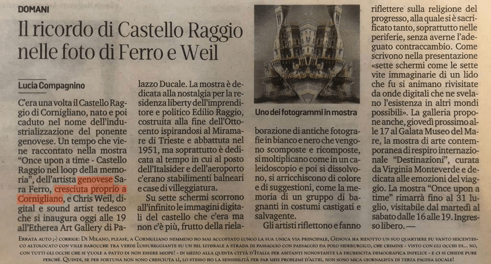
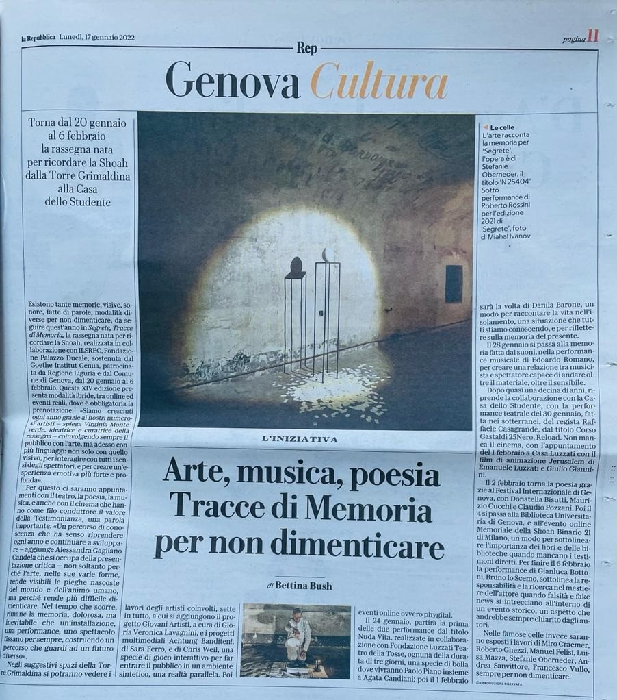
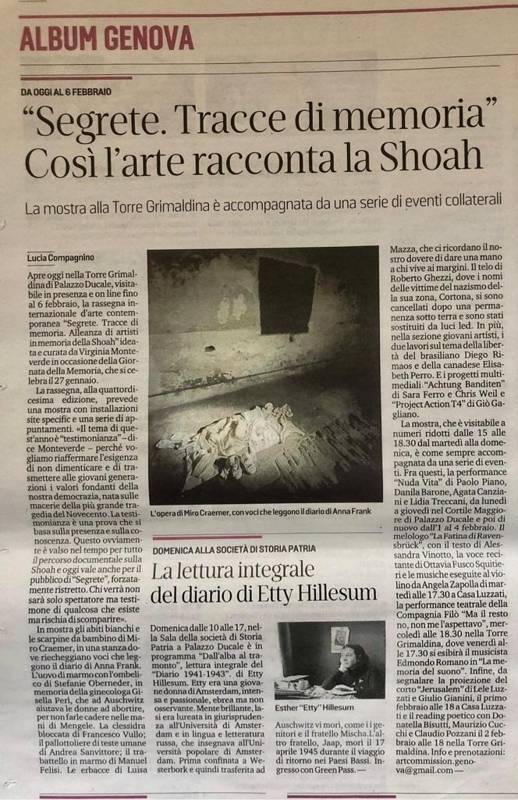
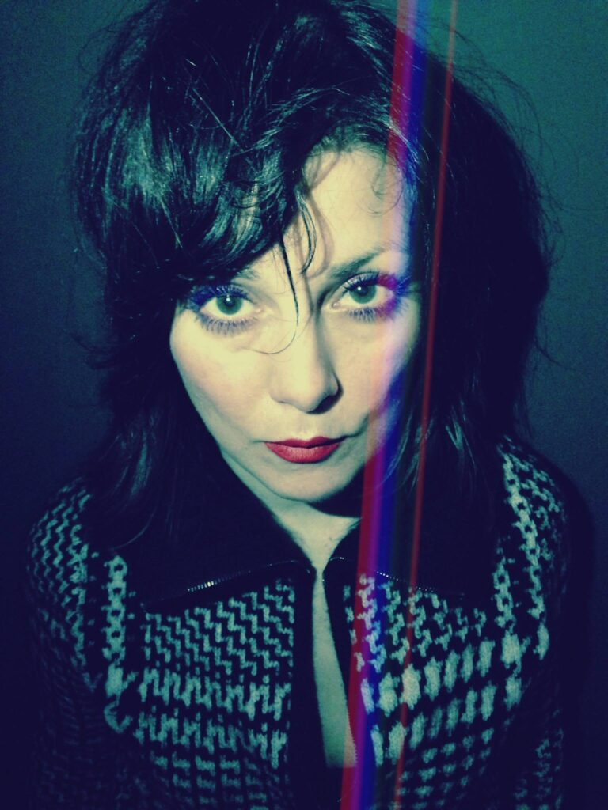
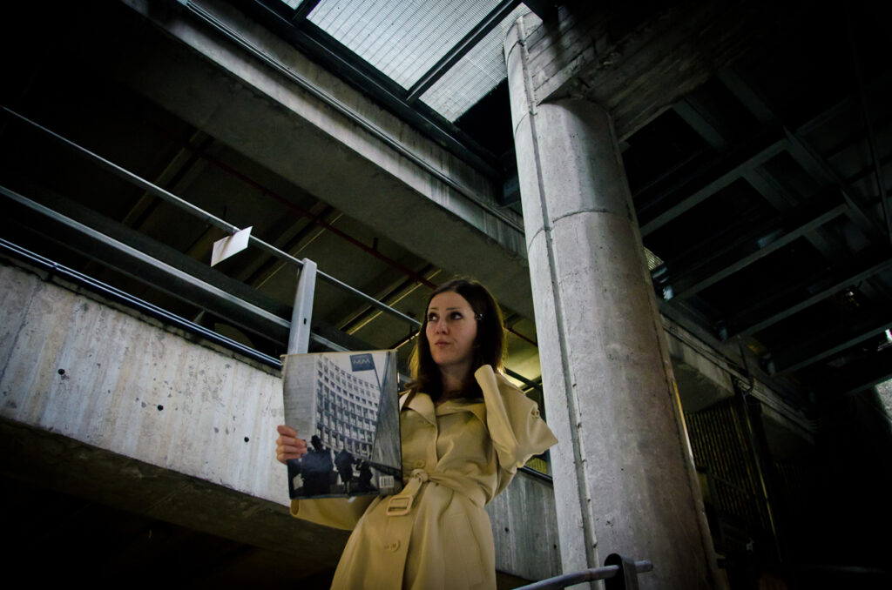
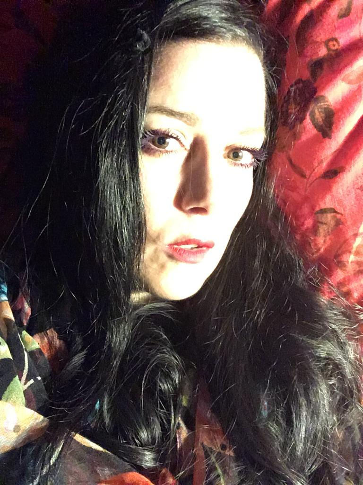
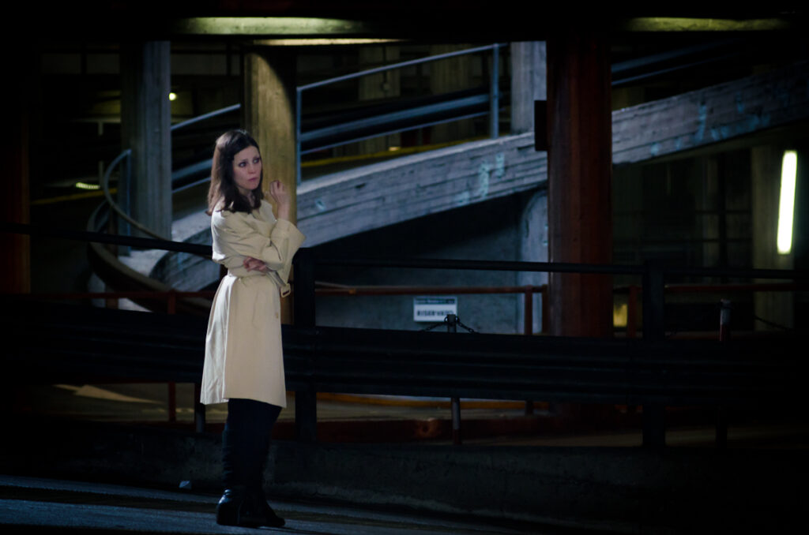
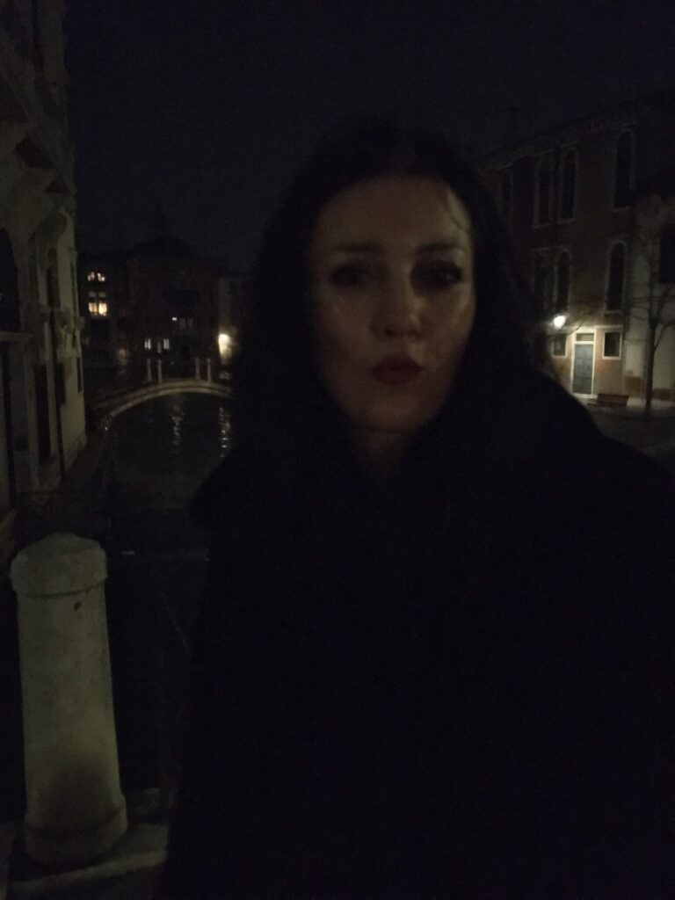

SARA FERRO
Film director / Moving Imaginist / Video artist / VR creator
Kaltcaldo VR | Zoroaster Superstar VR


Biography
Sara Ferro (1977, Milan) MA Sociology
Sara Wundersaar Ferro was born in Milan at the end of a turbulent decade. Secrecy of the world she sensed made her character secrete, underflows she detected let her opt for underground life, she acts as she would be undercover, yet she cannot seriously pass unnoticed.
One day she will become a ghostwriter. But before hermitage, she wants to develop a personal filmmaking hallmark.
Her filmmaking is experimental at its core, visually, in spirit and in terms of substance.
Inspirations come from the counterculture, pop occulture, psychedelic rock, cultural studies, antique trade, and rare books as well as highbrow culture; foremost yet, directly from the multiverse. She has translated German literature from the Golden Twenties. Almost unpredictable in her movements, she is anyway almost serial in her places choices: one month a year she walks in Venice, Milan keeps her on the leash, Genoa is her harbor, the Lake Como district her haven. Otherwise, Europe is her living space and she is there on the move. She has flipped off social media, not at all prone to mainstream and vote-buying.
In 2022 her works get selected for the AdAC – ARCHIVIO D’ARTE CONTEMPORANEA – Università degli Studi di Genova.
Vision: Both in making award-winning feature documentary films and experimental projects/video art she tackles the austerity of the Traditional Studies – e.g. how the esoteric “arts” and “sciences” call their concerns with all the related paraphernalia and conceptual apparatuses -, making them light like vibrating swooshes.
Focus: Although academically a social scientist, she has become more and more attracted to cinematics far away from reality towards perennial philosophy up to the point that she bohemianlly lives only for the sake of those arts.
Founder: Artoldo Media / Artoldo Pictures
Founder and Festival director of: Hermetic Film Festival, Innuendo Film Festival, ProToPost Film Festival
Sara Ferro (1977, Milano)
Studia e si laurea in Sociologia, specializzandosi in Media. Ha un alterego detective undercover sui generis, che segue indizi antiquari, spia scene subculturali transumane e frequenta mondi più esoterici che esotici, ma non tralasciando mai di curare un distaccato piglio etnologico. Vive tra nonchalanche ed estrema versatilità. Sua passione i vertici del triangolo industriale, natali milanesi, decadi genovesi, orizzonti sulle vette torinesi. Ha tutto un passato tra altre città ancora, tutte ufficialmente d’arte, come Berlino e Venezia e un po’ di Londra. Difficile starle dietro mentre salta da una sinapsi alla prossima sinergia, è una moving imaginist con suo campo di elezione nelle moving images che ama si animino sulle piattaforme online mosse da onde digitali. Vorrebbe lasciare il segno nella teoria sociologica attraverso riflessioni di natura audiovisiva oppure riflessi ottici che con uno stimolo visivo potente si colleghino ipertestualmente ad informazioni di natura simbolica e dunque universale. La sua sperimentazione ha allure psicogeografica, anche quando i territori sono quelli squisitamente mentali.
Sara Ferro e cresciuta tra la città meneghina, l’Umbria e la costa ligure, ha completato gli studi liceali a Genova tornando poi nel capoluogo lombardo per gli studi universitari. Nel 2008 ottiene la laurea magistrale in Sociologia presso l’Università degli Studi di Milano-Bicocca. Nel frattempo si è attivata per ottenre lo status di freemover presso la Humboldt Universität zu Berlin, dopo essersi innamorata della serietà nei confronti degli studi sociali emanata dall’ateneo berlinese e dopo aver trascorso il suo curriculare semestre Erasmus all’Universität Bremen. L’apprezzamento per la mentalità tedesca che Sara Ferro ha da subito percepito affine in maniera molto peculiare all’analisi sociologica la porterà in parte a dedicare la sua tesi di laurea all’atmosfera della capitale tedesca, redigendo un lavoro che a partire da una certa nostalgia percepibile nell’atmosfera berlinese e anche molto commercialmente sfruttata, la porterà a voler definire i contorni sociologici del sentimento sociale nostalgico e nella fattispecie, della nostalgia per il comunismo. A Berlino ha abitato sei anni mantenendosi gli studi occupandosi di moda – ben sfruttando a tale scopo l’allure dei suoi natali milanesi e la sua innata dimestichezza nelle questioni di stile; a questo periodo risalgono i suoi primi interessi nel campo delle videoriprese e dell’attività del videomaker. Dopo un soggiorno di un anno a Londra e una breve esperienza in un giornale di informazione finanziaria della capitale britannica, dove si è occupata dei rapporti di alcuni inserzionisti con l’Italia ha deciso di tornare a Berlino per prender parte al master in Storia delle città e culture urbane presso la Technische Universität Berlin.
Dopo diversi tirocini presso enti culturali espressione istituzionale delle relazioni italo-tedesche e variegate esperienze nel settore turistico sempre a contatto con la comunità dei parlanti il tedesco, riapproda in Germania, questa volta a Monaco presso il noto studio bibliografico Zisska und Lacher per lavorare nel settore dell’antiquariato librario e dove riuscirà ad avere un esperienza assai peculiare e singolare piuttostosìanzichéno come bibliografa – nonostante la madrelingua italiana – con la sfida quotidiana di dover leggere seicenteschi titoli in fraktur alla velocità della luce. Oltre che nel campo dell’antiquariato librario ha fatto sempre oltralpe una breve esperienza anche in un’altra casa d’aste, la monacense Neumeister, nel dipartimento dei lavori su carta. Ha completato quindi il suo soggiorno a Monaco con uno doppio stage presso la Bayerischer Rundfunk in ambito redazionale e a contatto con le riprese in studio per un progrmma di varietà.
I suol percorso di approfondimento della lingua tedesca è sato coronato dalla traduzione appunto dal tedesco in italiano di un romanzo degli anni ’20 che verrà dato alle stampe questo autunno. Da due anni produce assieme al marito tedesco documentari per lo più riguardanti cose tedesche ma dall’impatto potenzialmente universale. Oggi è decisa a voler ampliare il campo d’azione mirando al vastissimo e mirabolante territorio umanistico delle cose italiche che le fanno pulsare il cuore. Appassionata bibliofila, amante dell’iconografia e dell’emblematica seicentesca deciderà di far combaciare le sue passioni intellettuali e quelle più prettamente creative nel settore degli audiovisivi. Sente come sua missione documentaristica il voler avvicinare la fascinazione sprigionata da un certo tipo di iconografia detta ermetica agli studi culturali secondo un approccio storico ed umanistico, ma con il piglio delle scienze sociali e comunque sempre da un punto di vista accademico, anche se nell’ottica della creazione di un prodotto alleggerito da uno stile narrativo e da un montaggio improntato alla video arte e da “trucchi del mestiere” in linea con lo Zeitgeist dell’estetica conntemporanea e con l’intento non solo di informare ma addirittura di raggiungere il sostrato dell’inconscio collettivo, attraverso un’esperienza che si avvale di elementi del cinema indipendente edulcorati quanto basta per essere digeriti anche dal pubblico televisivo. In Artoldo si occupa di regia, montaggio, individuazione delle tematiche, ricerche redazionali, ricerche specializzate (ad esempio bibliografiche ed iconografiche) e traduzioni.
Curation
- HERMETIC FILM FESTIVAL – Festival Director
- INNUENDO FILM FEST – Festival Director
- ProToPost International – Festival Director
Exhibitions
- BIENNALE LE LATITUDINI DELL’ARTE
- Iran Germany Italy – International Exhibition
- Clavis Artis in the Cloud – Zoroaster
- Clavis Artis
- MOSAIC on Paper
- Satanic Panic – The Luther Blissett Legacy
- Anticorpi in corpisan(t)i
- NFTs For Peace “Abhor The War”
- NO WAR
- SEGRETE Tracce di Memoria XIV
- GRRL Telephone PHOTO AND VIDEO EXHIBIT
- Once upon a time – Castello Raggio: nel loop della memoria
- DEAD as a DODO
- ROMAN SUSAN Streetlight
- ITSLIQUID International Art Fair
- Sfarfallii liberali 360°
- Nello Spazio Fa Freddo / It’s Cold In Space
- The 7 Memorials for Humanity – Darkroom
- CICA – Experimental Film and Video
- Anamorpheion – Inbetween Worlds
Filmography
Documentaries
- The Ritman Library: Amsterdam
- Ugo Dossi – Art and Space
- Hauntology of the Retrodromomania
- C.G. Jung on Alchemy
Video Art
- Paleo Impulse
- Super Sauber
- CarOuzel
- WhimSeaCall – Nocturnal Sea
- Super Vario Birds
- MicroGnosing
- Timor Panicus
- Vespertilio Spillover
- Speed
- TempoRally
- AT MOre SPHERES
- Queen of the Luna Parking
- H(o)me(o)pa®t(h)y
- Synecdoche Turin
- Mascara Cartridge Déjà War
- Glitching Offshore
- Taxidrome
- PegaSOMOSh
- Frammenti di una Festa Furiosa
- Night Terror
- VE®NICE69
- Play Rec: For Film
- Plant X
- Dio No No War
- The Luther Blissett Legacy
- Prampolini-Menarini Express
Press
- Intervista esclusiva su il Blast (Prima parte)
- Intervista esclusiva su il Blast (Seconda parte)
- Intervista esclusiva su il Blast (Terza parte)
{kind=link}

{kind=link}

{kind=link}



Publications
NFT + Crypto Art
Virtual Reality
{kind=link}

{kind=link}

{kind=link}

{kind=link}

{kind=link}
